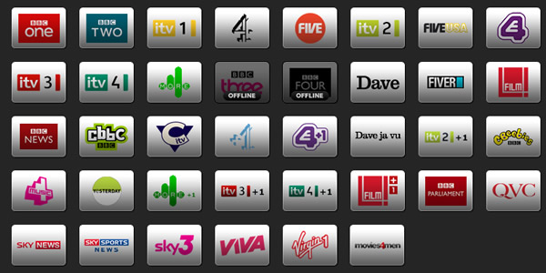

|
|
Google Drive LaunchRumors and reports of Google Drive’s imminent launch have been coming hard and fast lately, but this one may just take the cake. The folks at The Next Web managed to get their hands on a draft of an announcement from one of Google’s official Drive partners, and have just revealed a few titillating details about the storage-service-that-almost-wasn’t. Earlier reports noted that the long-awaited cloud storage service would make its official debut sometime this week, but that no longer appears to be the case. Instead, Google Drive will reportedly launch next week, bestowing all interested users with 5GB of free storage to play with right out of the gate.
Watch TV on tablets than computersyour notebook still your preferred second TV? Well, it seems you're now in the minority. The hip new way of consuming the drug of the nation after the 'ole tube itself is on a tablet, according to a recent Viacom study. Over 2,500 people were polled nationwide, and the results show a shift away from computers and smartphones to slates. Tabs made up 15 percent of full-length TV show viewings, with the increase of streaming services and companion apps being cited as contributing factors to the trend. We don't know what the fuss is about, we watch all our telly on a tablet. What about the quality?Surprisingly good, particularly BBC1, BBC2, ITV1, Channel 4, and Channel 5 which all play in high quality. I watched BBC1, BBC2 and ITV over my home Wi-Fi and all streamed beautifully with good quality (ok maybe not perfect but very good). One thing I noticed is that on all three channels there was an exact 40 second time delay, and yes I timed this with my iPhone stopwatch (a true geek). Next I tested the channels over 3G. I switched off the WiFi on iPhone and was on O2 3G full 5 bar reception and… “Yes results I am super excited! I am watching live BBC1 very good quality over the 3G Network.” The delay is the same as on WiFi, 40 second. The Tvcatchup.com service was actually launched at the end of 2009 so not entirely new but it’s the first time am using it. Read More
SMARTPHONESCisco updates IP phone capabilitiesApr 18, 2012 03:06 pm | Computerworld Cisco Wednesday announced Wednesday that it has sold its 50 millionth IP phone, up from 30 million sold through just two years ago. The switching giant today also said it will make software for presence, instant messaging and Cisco Jabber IM clients available for free to its Unified Communications Manager customers. The latter move means organizations with UCM can roll out presence and IM to employees simply and cheaply to smartphones and tablets running various operating systems, Barry O'Sullivan, senior vice president of Cisco's voice technology group, said in a blog post. The supported OSs include Windows, Mac, iPad, Cisco Cius, iPhone, BlackBerry and, later in 2012, Android, O'Sullivan said. The move helps companies "deploy a unified communications client that is BYOD-ready," he added. BYOD refers to Bring Your Own Device, a trend where companies allow workers to use devices of their choosing to connect to company data wirelessly. O'Sullivan noted that desktop phones are still popular because of voice quality and other features, and because companies can add software that connects the desktop phone number to a smartphone or tablet when in the field. Jabber software can be used to move beyond text IM to videoconferencing from a mobile device as well. Matt Hamblen covers mobile and wireless, smartphones and other handhelds, and wireless networking for Computerworld. Follow Matt on Twitter at @matthamblen, or subscribe to Matt's RSS feed . His e-mail address is mhamblen@computerworld.com. Read More about mobile and wireless in Computerworld's Mobile and Wireless Topic Center.
iPad Apps for Students
By john on Tuesday, June 8th, 2010 The amount of and variety of technology available today is incredible. Certainly the iPod, iPhone, and now the iPad have changed the way college students and university students communicate and work in order to be successful in school. Of course everyone is aware of Apple’s applications or “apps” as they have come to be referred to but not everyone is aware that there are a few apps that are great tools for college and university students. Read More
|